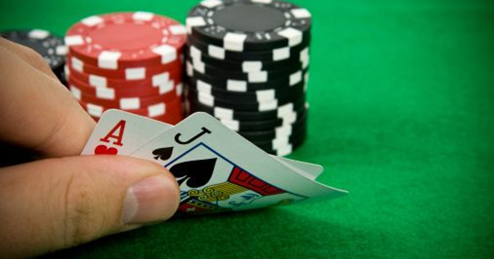

BLACKJACK Rules
Blackjack is played with one or more standard 52-card decks, with each denomination assigned a point value. The object for the player is to draw cards totaling closer to 21, without going over, than the dealer's cards. Players are each dealt two cards, face up or down depending on the casino and the table. In the U.S., the dealer is also dealt two cards, normally one up (exposed) and one down (hidden). In most other countries, the dealer only receives one card face up. The value of cards two through ten is their pip value (2 through 10). Face cards (Jack, Queen, and King) are all worth ten. Aces can be worth one or eleven. A hand's value is the sum of the card values. Players are allowed to draw additional cards to improve their hands. A hand with an ace valued as 11 is called "soft", meaning that the hand will not bust by taking an additional card. The value of the ace will become one to prevent the hand from exceeding 21. Otherwise, the hand is called "hard".
Once all the players have completed their hands, it is the dealer's turn. The dealer hand will not be completed if all players have either busted or received blackjacks. The dealer then reveals the hidden card and must hit until the cards total up to 17 points. At 17 points or higher the dealer must stay. (At most tables the dealer also hits on a "soft" 17, i.e. a hand containing an ace and one or more other cards totaling six.) You are betting that you have a better hand than the dealer. The better hand is the hand where the sum of the card values is closer to 21 without exceeding 21. The detailed outcome of the hand follows:
- If the player is dealt an Ace and a ten-value card (called a "blackjack" or "natural"), and the dealer does not, the player wins and usually receives a bonus.
- If the player exceeds a sum of 21 ("busts"); the player loses, even if the dealer also exceeds 21.
- If the dealer exceeds 21 ("busts") and the player does not; the player wins.
- If the player attains a final sum higher than the dealer and does not bust; the player wins.
- If both dealer and player receive a blackjack or any other hands with the same sum called a "push", no one wins.
About the game
The game I am developing is a newbie prototype of the casino one. I am currently working on it.
The features that are going to be included in the protype are:
- Player vs Computer mode
- Only Hit and Stand options
- Simplified UI
Video Material
About the author
Hello everyone! My name is Vasil and I am a programming enthusiast. I have passion for web development and software development. Currently I am studying in Gabrovo, Bulgaria at PMG"Akademic Ivan Gyzelev". In my free time I love hiking, playing video games and spinning fire.
Here you can find my social media: